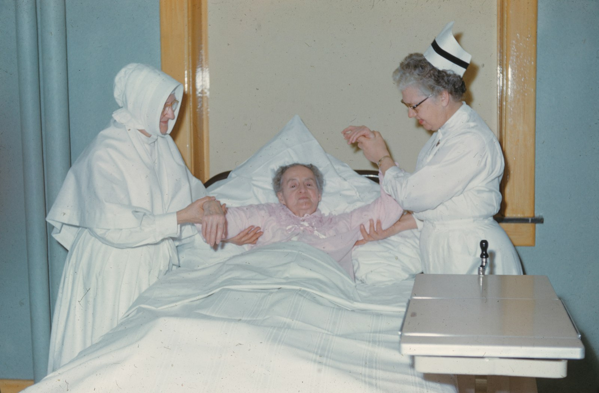
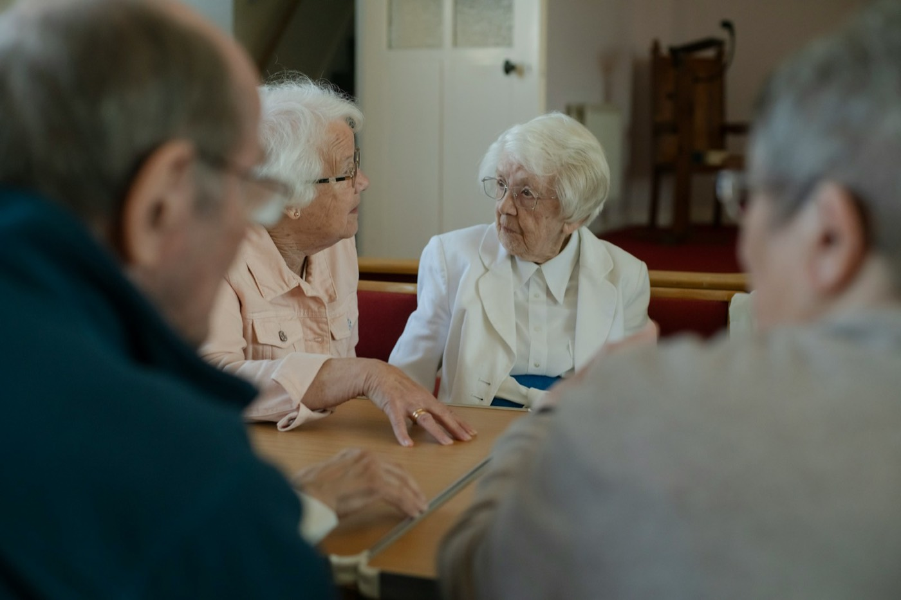
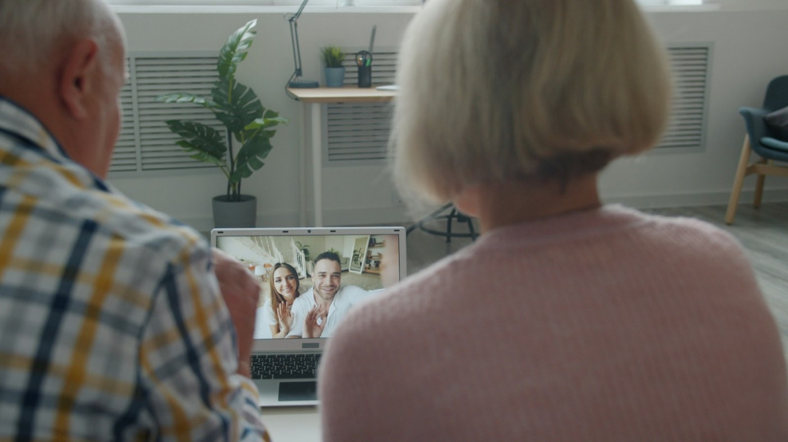
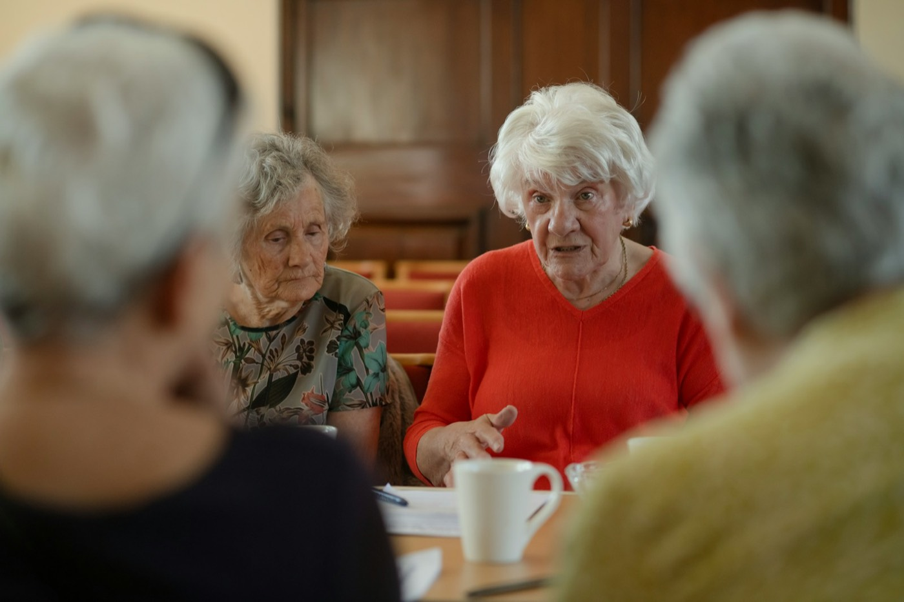
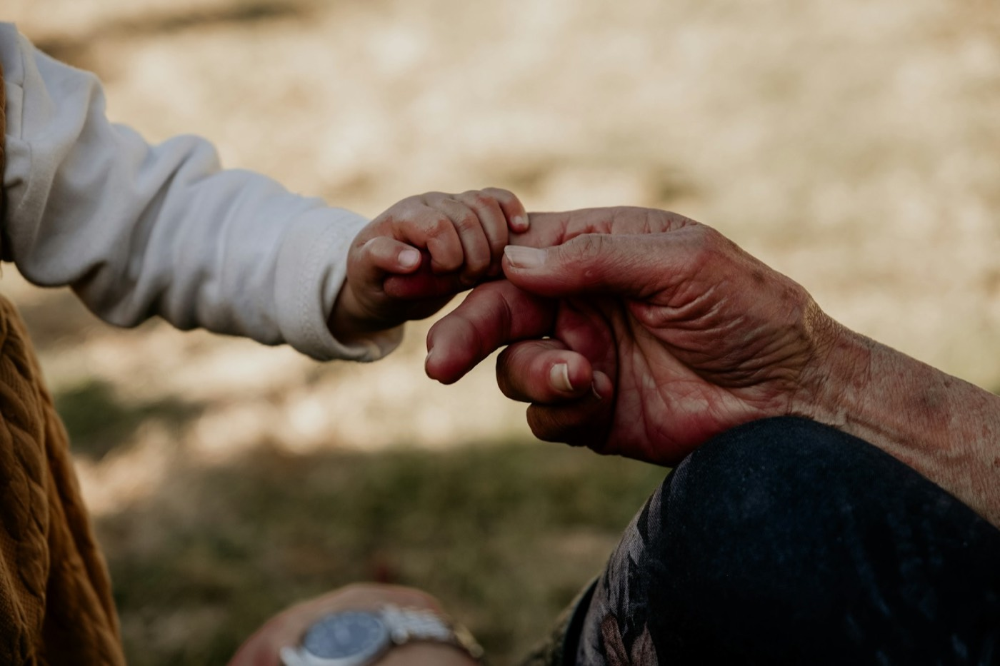

No guide matches. Call us and ask a person: (02) 5550 0142
Dementia
 What are the stages of dementia, and what care is needed at each?Dementia is usually described in three broad stages: early, middle and late.
What are the stages of dementia, and what care is needed at each?Dementia is usually described in three broad stages: early, middle and late. How to handle sundowning at homeSundowning is restlessness, confusion or distress that gets worse in the late afternoon and evening.
How to handle sundowning at homeSundowning is restlessness, confusion or distress that gets worse in the late afternoon and evening. What to do when a parent with dementia refuses helpRefusing help is common and usually comes from fear of losing independence, not stubbornness.How to keep a person with dementia safe from wanderingWandering is common in dementia and can be dangerous.
What to do when a parent with dementia refuses helpRefusing help is common and usually comes from fear of losing independence, not stubbornness.How to keep a person with dementia safe from wanderingWandering is common in dementia and can be dangerous. Signs it is time for home care for dementiaIt is time to bring in home care when safety, eating, hygiene or the health of the family carer start to slip: falls or near misses, weight loss, missed medicines, an unwashed or unchanged look, getting lost, or a carer who is exhausted.
Signs it is time for home care for dementiaIt is time to bring in home care when safety, eating, hygiene or the health of the family carer start to slip: falls or near misses, weight loss, missed medicines, an unwashed or unchanged look, getting lost, or a carer who is exhausted. Dementia and eating: how to keep a loved one fed and hydratedPeople with dementia often eat and drink less because they forget, cannot recognise food, find cutlery hard or do not feel thirst.
Dementia and eating: how to keep a loved one fed and hydratedPeople with dementia often eat and drink less because they forget, cannot recognise food, find cutlery hard or do not feel thirst.Paying for care




Choosing care
 15 questions to ask a home care agency before you signBefore you sign, ask about licensing, screening, training, staffing, reliability, communication, prices and complaints.
15 questions to ask a home care agency before you signBefore you sign, ask about licensing, screening, training, staffing, reliability, communication, prices and complaints. Agency or private hire: what is the difference?A provider employs, screens, trains, insures and supervises its support workers and covers sick days.
Agency or private hire: what is the difference?A provider employs, screens, trains, insures and supervises its support workers and covers sick days. How to check an aged care provider's registrationRegistered aged care providers are listed by the Aged Care Quality and Safety Commission.
How to check an aged care provider's registrationRegistered aged care providers are listed by the Aged Care Quality and Safety Commission.Family carers
 Caregiver burnout: signs and what to doCaregiver burnout is physical and emotional exhaustion from caring for someone over a long time.
Caregiver burnout: signs and what to doCaregiver burnout is physical and emotional exhaustion from caring for someone over a long time.
How to talk to siblings about sharing careStart with facts, not blame: what your parent needs each week, what it costs and who is doing what now.
Caring for a parent from interstate or overseasYou can care well from far away by building a local team, getting legal permissions in place, using technology to see what happens day to day, and visiting with a plan. Leaving hospital: a first-week checklistThe first week home from hospital is when problems are most likely: confusion about medicines, falls, missed follow-ups and not eating.
Leaving hospital: a first-week checklistThe first week home from hospital is when problems are most likely: confusion about medicines, falls, missed follow-ups and not eating.
A family meeting agenda for deciding on careA good family meeting has a written agenda, the person needing care involved as much as possible, facts about needs and money, and clear decisions with names and dates.Free tools and downloads
Tools families use most.

Every guide is written answer-first, with the author and last-updated date shown. Clinical review is pending: until a qualified reviewer signs a guide off, it is general information only.

Home is where they know where everything is.
Familiar rooms, familiar faces, one steady team.




Next step
You do not have to work this out alone.
Call (02) 5550 0142 and a care advisor will listen first, then tell you plainly what we would do and what it would cost.